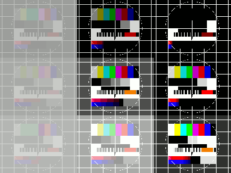

Element-wise Operations
Invert Image
Greyscale as well as colour images can be inverted. This example shows how to do this.
require 'hornetseye_rmagick'
require 'hornetseye_xorg'
include Hornetseye
img = MultiArray.load_ubytergb 'http://www.wedesoft.de/hornetseye-api/images/colour.png'
( 255 - img ).show
Thresholding

This example shows how to apply a threshold to an image. Since the result is a boolean image, it needs to be converted using the conditional function before it can be displayed.
require 'hornetseye_rmagick'
require 'hornetseye_xorg'
include Hornetseye
img = MultiArray.load_ubyte 'http://www.wedesoft.de/hornetseye-api/images/grey.png'
binary = img >= 128
binary.conditional( 255, 0 ).show
Gamma correction
One can do gamma correction by applying an exponential function to each pixel.
require 'hornetseye_openexr'
require 'hornetseye_xorg'
include Hornetseye
system 'wget -c http://www.wedesoft.de/hornetseye-api/images/bmw.exr'
img = MultiArray.load_sfloatrgb 'bmw.exr'
( img ** 0.03 ).normalise.show
Adjusting Brightness and Contrast

Changing the brightness and/or contrast of an image simply means applying a gain and an offset to the image. The values need to be clamped before they can be displayed.
require 'hornetseye_rmagick'
require 'hornetseye_xorg'
include Hornetseye
N = 3
img = MultiArray.load_ubytergb 'http://www.wedesoft.de/hornetseye-api/images/colour.png'
w, h = *img.shape
thumb = (img.downsample(N, N) / 255.0) ** 2.2
result = MultiArray.ubytergb *thumb.shape.collect { |d| d * N }
for y in 0 ... N
for x in 0 ... N
brightness = 2 * (y + 0.5) / N - 1.0
contrast = 2 * (x + 0.5) / N - 1.0
factor = (contrast + 1.0) / (1.0 - contrast)
offset = 0.5 * (1.0 + (brightness -1.0) * factor)
sample = thumb * factor + offset
result[w / N * x ... w / N * (x + 1),
h / N * y ... h / N * (y + 1)] = (255 * sample ** (1 / 2.2)).clip
end
end
result.show
Element-wise Logarithm
The element-wise logarithm can be used to display images with a large contrast range.
require 'hornetseye_openexr'
require 'hornetseye_xorg'
include Hornetseye
system 'wget -c http://www.wedesoft.de/hornetseye-api/images/bmw.exr'
img = MultiArray.load_sfloat 'bmw.exr'
Math.log(img + 0.1).normalise.show
Pseudo Colours
You can create pseudo-colour images in real-time. The example program loads a single greyscale image and converts it to pseudo colour. Pseudo colour are often used to display IR images.
require 'hornetseye_rmagick'
require 'hornetseye_xorg'
include Hornetseye
class Numeric
def clip( range )
[ [ self, range.begin ].max, range.end ].min
end
end
colours = Sequence.ubytergb 256
for i in 0...256
hue = 240 - i * 240.0 / 256.0
colours[i] =
RGB( ( ( hue - 180 ).abs - 60 ).clip( 0...60 ) * 0xFF / 60.0,
( 120 - ( hue - 120 ).abs ).clip( 0...60 ) * 0xFF / 60.0,
( 120 - ( hue - 240 ).abs ).clip( 0...60 ) * 0xFF / 60.0 )
end
img = MultiArray.load_ubyte 'http://www.wedesoft.de/hornetseye-api/images/world.jpg'
img.lut( colours ).show